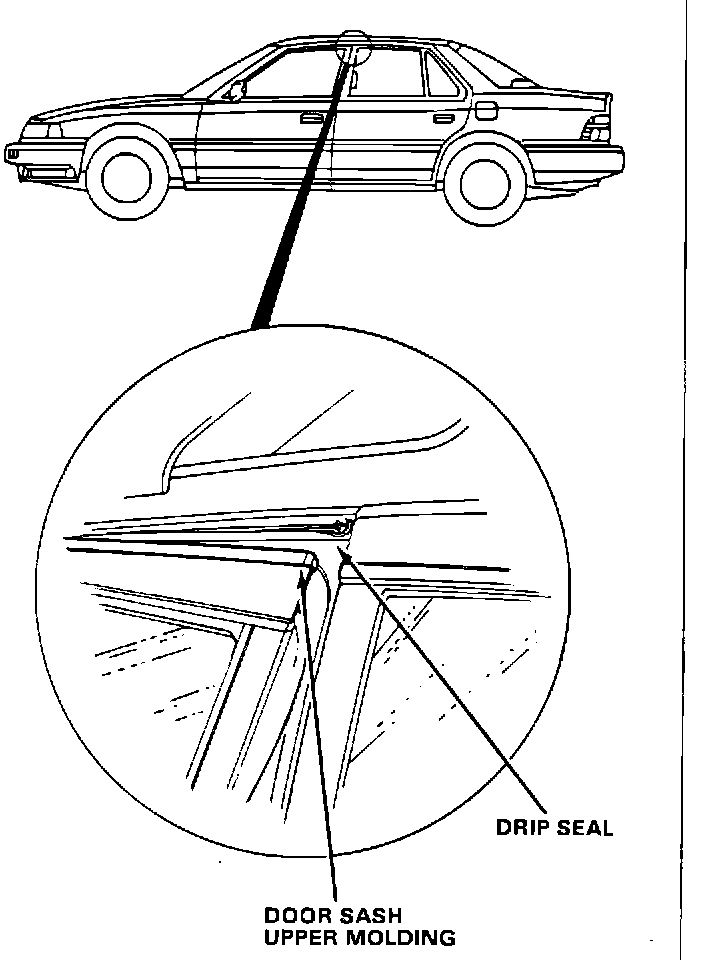
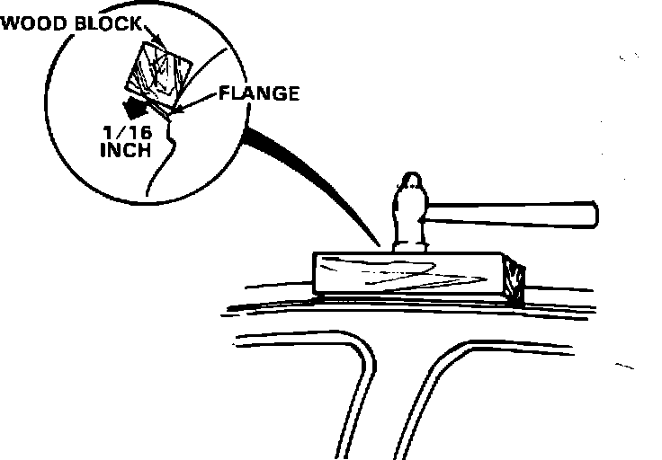

Drip Seal - Torn
86acura01September 22, 1986
YEAR MODEL APPLICATION
1986 LEGEND ALL
86-013
Torn Drip Seal

PROBLEM
The drip seal has been torn by the rear edge of the front door sash upper molding.
CORRECTIVE ACTION
1. Check for proper door alignment. If adjustments are necessary, refer to Service Manual page 20-13.
2. Remove the torn drip seal.

3. Using a hammer and a wood block, bend 6 inches of the flange (3 inches on either side of the point of contact) downward 1/16 inch.
NOTE: Excessively bending the flange may result in wind noise or a water leak.
4. Clean the flange with alcohol.
5. Install the appropriate drip seal listed under PARTS INFORMATION, using a weather strip adhesive such as 3M Super Weather Strip Adhesive (3M Part No. 08008).
PARTS INFORMATION
Drip seal: 72318-SD4-013 (right) 72358-SD4-013 (left)
WARRANTY CLAIM INFORMATION
Operation number: 836110 (right) 835110 (left)
Flat rate time: 0.3 hour per side for flange adjustment and drip seal replacement Add 0.3 hour per side for door alignment
Failed P/N: 72318-SD4-013 (right) 72358-SD4-013 (left)
Defect code: 021
Contention code: A01